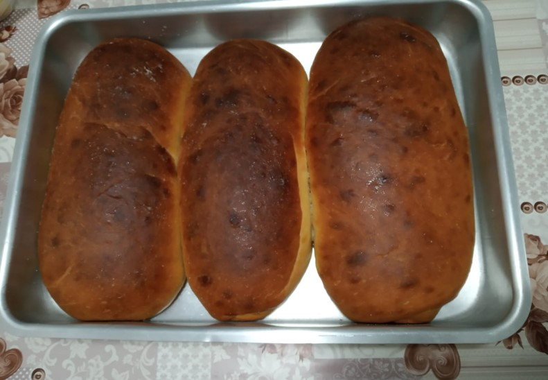

Baking bread
Welcome to my web page!
I really like home baked breads. There are many different tastes we can add, and we can also bake different types of dough. Another positive point of home made breads is that you can enjoy eating a warm bread right out of the oven, when its shape is the better possible.
Thinking about sharing this passion, in this page I will present you a recipe for a quite easy to bake bread. I will also provide some information about best time to consume, how to store and how to freeze it.
Take a look at a home baked bread:
So, lest's get to the point!
Overview
Bread is one of the most consumed type of food around the world. It can also become a very flexible food, as you can go from just making a quick delicious sandwish to baking a layered salvory pie.
In Brazil the most traditional breakfast is bread with butter and a cup of black coffe. Some variations include adding a light fryed egg and coalho cheese to the bread.
Note: Coalho cheese is a brazilian cheese. It consists of a lightweight, white colored, firm cheese produced from northwestern to southeast Brazil.
Recipe
Following is a recipe for an easy to bake but tasty homemade bread:
| Dough's Ingredients | ||
|---|---|---|
| Unit measure | Amount | Ingredient's name |
| spoon | 01 | sugar |
| spoon | 01 | active dry yeast |
| cup | 01 | water |
| unit | 01 | egg |
| cup | 1/2 | vegetal oil |
| cup | 1/2 | milk |
| tea spoon | 1 | salt |
| cup spoon | 4 | wheat flour |
| Top Mixture | ||
| Unit measure | Amount | Ingredient's name |
| unit | 1 | egg gem |
| spoon | 1 | milk |
Preparing the dough:
- In a bow, mix the sugar, the active dry yeast and the water until it turns into an homogeneous mixture
- Add the egg, the oil, the milk, the salt and half of the wheat flour
- Mix until it turns into an homogeneous mixture
- Add the rest of the wheat flour
- Knead the dough for at least 3 minutes
- Leave the dough resting for 40 minutes
- After, take out the dough's air and open it with the help of a kitchen roll
- Shape the dough into a roll and put it in an over tray
- Leave the dough rest for 20 minutes and turn on the oven at 200 degres
- After the dough's rise, mix the egg gem and the milk and brush the top of the loaf
- Preheat the oven to 200 celcius degrees
- Bake the bread for about 35 to 40min or until it turns golden brown on top
- Allow it to cool for about 10 minutes before slicing
Consuming
All home made products has a due date shorter than the products produced by industry, but it also means that fresh products are healthier as they doen't have any conservants added.
The bread's recipe provided in this page is usually best before 7 days from baking.
Storing
Once cool, store the bread in an airlight plastic container or a plastic bag.
The airlight way of storing the bread prevents it from hardening and improves the time it stays best for consume.
Freezing Instructions
You can freeze the bread after it's baked. Wrap the bread in a plastic wrap and store it on freezer for up to 3 months.
To unfreeze the bread leave it in room temperature until it is completely unfrozen or reheat the bread in a preheated oven for about 10 min. It is also possible to reheat the bread using a airfryer.